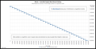
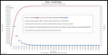
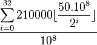
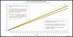

A fixed money supply, or a supply altered only in accord with objective and calculable criteria, is a necessary condition to a meaningful just price of money. (1.1)—[Fr. Bernard W. Dempsey, S.J.](https://www.jstor.org/stable/29769582) (1903-1960)
In a centralized economy, currency is issued by a central bank at a rate that is supposed to match the growth of the amount of goods that are exchanged so that these goods can be traded with stable prices. The monetary base is controlled by a central bank. In the United States, the Fed increases the monetary base by issuing currency, increasing the amount banks have on reserve, and more recently, printing money electronically in a process called Quantitative Easing.
In a fully decentralized monetary system, there is no central authority that regulates the monetary base. Instead, currency is created by the nodes of a peer-to-peer network. The Bitcoin generation algorithm defines, in advance, how currency will be created and at what rate. Any currency that is generated by a malicious user that does not follow the rules will be rejected by the network and thus is worthless.
Currency with Finite Supply
  Bitcoins are created each time a user discovers a new block. The rate of block creation is adjusted every 2016 blocks to aim for a constant two week adjustment period (equivalent to 6 per hour.) The number of bitcoins generated per block is set to decrease geometrically, with a 50% reduction every 210,000 blocks, or approximately four years. The result is that the number of bitcoins in existence is not expected to exceed 21 million. (2.1) Speculated justifications for the unintuitive value "21 million" are that it matches a 4-year reward halving schedule; or the ultimate total number of Satoshis that will be mined is close to the maximum capacity of a 64-bit floating point number. Satoshi has never really justified or explained many of these constants.
{kind=link}
{kind=link}

This decreasing-supply algorithm was chosen because it approximates the rate at which commodities like gold are mined. Users who use their computers to perform calculations to try and discover a block are thus called **Miners.
Projected Bitcoins Short Term
This chart shows the number of bitcoins that will exist in the near future. The Year is a forecast and may be slightly off.
| Date reached | Block | Reward Era | BTC/block | Year (estimate) | Start BTC | BTC Added | End BTC | BTC Increase | End BTC % of Limit |
|---|---|---|---|---|---|---|---|---|---|
| 2009-01-03 | 0 | 1 | 50.00 | 2009 | 0 | 2625000 | 2625000 | infinite | 12.500% |
| 2010-04-22 | 52500 | 1 | 50.00 | 2010 | 2625000 | 2625000 | 5250000 | 100.00% | 25.000% |
| 2011-01-28 | 105000 | 1 | 50.00 | 2011* | 5250000 | 2625000 | 7875000 | 50.00% | 37.500% |
| 2011-12-14 | 157500 | 1 | 50.00 | 2012 | 7875000 | 2625000 | 10500000 | 33.33% | 50.000% |
| 2012-11-28 | 210000 | 2 | 25.00 | 2013 | 10500000 | 1312500 | 11812500 | 12.50% | 56.250% |
| 2013-10-09 | 262500 | 2 | 25.00 | 2014 | 11812500 | 1312500 | 13125000 | 11.11% | 62.500% |
| 2014-08-11 | 315000 | 2 | 25.00 | 2015 | 13125000 | 1312500 | 14437500 | 10.00% | 68.750% |
| 2015-07-29 | 367500 | 2 | 25.00 | 2016 | 14437500 | 1312500 | 15750000 | 9.09% | 75.000% |
| 420000 | 3 | 12.50 | 2017 | 15750000 | 656250 | 16406250 | 4.17% | 78.125% | |
| 472500 | 3 | 12.50 | 2018 | 16406250 | 656250 | 17062500 | 4.00% | 81.250% | |
| 525000 | 3 | 12.50 | 2019 | 17062500 | 656250 | 17718750 | 3.85% | 84.375% | |
| 577500 | 3 | 12.50 | 2020 | 17718750 | 656250 | 18375000 | 3.70% | 87.500% | |
| 630000 | 4 | 6.25 | 2021 | 18375000 | 328125 | 18703125 | 1.79% | 89.063% | |
| 682500 | 4 | 6.25 | 2022 | 18703125 | 328125 | 19031250 | 1.75% | 90.625% | |
| 735000 | 4 | 6.25 | 2023 | 19031250 | 328125 | 19359375 | 1.72% | 92.188% | |
| 787500 | 4 | 6.25 | 2024 | 19359375 | 328125 | 19687500 | 1.69% | 93.750% |
** In Block 124724, user midnightmagic mined a solo block to himself which underpaid the reward by a single Satoshi and simultaneously destroyed the block's fees. This the the only known reduction in the total mined supply of Bitcoin. Therefore, from block 124724 onwards, all total supply estimates must technically be reduced by 1 Satoshi.
Projected Bitcoins Long Term
 Because the number of bitcoins created each time a user discovers a new block - the block reward - is halved based on a fixed interval of blocks, and the time it takes on average to discover a block can vary based on mining power and the network difficulty, the exact time when the block reward is halved can vary as well. Consequently, the time the last Bitcoin will be created will also vary, and is subject to speculation based on assumptions.
{kind=link}
If the mining power had remained constant since the first Bitcoin was mined, the last Bitcoin would have been mined somewhere near October 8th, 2140. Due to the mining power having increased overall over time, as of block 367,500 - assuming mining power remained constant from that block forward - the last Bitcoin will be mined on May 7th, 2140.
As it is very difficult to predict how mining power will evolve into the future - i.e. whether technological progress will continue to make hardware faster or whether mining will hit a a technological wall; or whether or not faster methods of SHA2 calculation will be discovered - putting an exact date or even year on this event is difficult.
The total number of bitcoins, as mentioned earlier, has an asymptote at 21 million, due to a technical limitation in the data structure of the blockchain - specifically the integer storage type of the transaction output, this exact value would have been 20,999,999.9769 bitcoin. Should this technical limitation be adjusted by changing the width of the field, the total number will still only approach or be a maximum of 21 million.
| Block | Reward Era | BTC/block | Start BTC | BTC Added | End BTC | BTC Increase | End BTC % of Limit |
|---|---|---|---|---|---|---|---|
| 0 | 1 | 50.00000000 | 0.00000000 | 10500000.00000000 | 10500000.00000000* | infinite | 50.00000006% |
| 210000 | 2 | 25.00000000 | 10500000.00000000 | 5250000.00000000 | 15750000.00000000 | 50.00000000% | 75.00000008% |
| 420000 | 3 | 12.50000000 | 15750000.00000000 | 2625000.00000000 | 18375000.00000000 | 16.66666667% | 87.50000010% |
| 630000 | 4 | 6.25000000 | 18375000.00000000 | 1312500.00000000 | 19687500.00000000 | 7.14285714% | 93.75000010% |
| 840000 | 5 | 3.12500000 | 19687500.00000000 | 656250.00000000 | 20343750.00000000 | 3.33333333% | 96.87500011% |
| 1050000 | 6 | 1.56250000 | 20343750.00000000 | 328125.00000000 | 20671875.00000000 | 1.61290323% | 98.43750011% |
| 1260000 | 7 | 0.78125000 | 20671875.00000000 | 164062.50000000 | 20835937.50000000 | 0.79365079% | 99.21875011% |
| 1470000 | 8 | 0.39062500 | 20835937.50000000 | 82031.25000000 | 20917968.75000000 | 0.39370079% | 99.60937511% |
| 1680000 | 9 | 0.19531250 | 20917968.75000000 | 41015.62500000 | 20958984.37500000 | 0.19607843% | 99.80468761% |
| 1890000 | 10 | 0.09765625 | 20958984.37500000 | 20507.81250000 | 20979492.18750000 | 0.09784736% | 99.90234386% |
| 2100000 | 11 | 0.04882812 | 20979492.18750000 | 10253.90520000 | 20989746.09270000 | 0.04887585% | 99.95117198% |
| 2310000 | 12 | 0.02441406 | 20989746.09270000 | 5126.95260000 | 20994873.04530000 | 0.02442599% | 99.97558604% |
| 2520000 | 13 | 0.01220703 | 20994873.04530000 | 2563.47630000 | 20997436.52160000 | 0.01221001% | 99.98779307% |
| 2730000 | 14 | 0.00610351 | 20997436.52160000 | 1281.73710000 | 20998718.25870000 | 0.00610426% | 99.99389658% |
| 2940000 | 15 | 0.00305175 | 20998718.25870000 | 640.86750000 | 20999359.12620000 | 0.00305194% | 99.99694833% |
| 3150000 | 16 | 0.00152587 | 20999359.12620000 | 320.43270000 | 20999679.55890000 | 0.00152592% | 99.99847420% |
| 3360000 | 17 | 0.00076293 | 20999679.55890000 | 160.21530000 | 20999839.77420000 | 0.00076294% | 99.99923713% |
| 3570000 | 18 | 0.00038146 | 20999839.77420000 | 80.10660000 | 20999919.88080000 | 0.00038146% | 99.99961859% |
| 3780000 | 19 | 0.00019073 | 20999919.88080000 | 40.05330000 | 20999959.93410000 | 0.00019073% | 99.99980932% |
| 3990000 | 20 | 0.00009536 | 20999959.93410000 | 20.02560000 | 20999979.95970000 | 0.00009536% | 99.99990468% |
| 4200000 | 21 | 0.00004768 | 20999979.95970000 | 10.01280000 | 20999989.97250000 | 0.00004768% | 99.99995236% |
| 4410000 | 22 | 0.00002384 | 20999989.97250000 | 5.00640000 | 20999994.97890000 | 0.00002384% | 99.99997620% |
| 4620000 | 23 | 0.00001192 | 20999994.97890000 | 2.50320000 | 20999997.48210000 | 0.00001192% | 99.99998812% |
| 4830000 | 24 | 0.00000596 | 20999997.48210000 | 1.25160000 | 20999998.73370000 | 0.00000596% | 99.99999408% |
| 5040000 | 25 | 0.00000298 | 20999998.73370000 | 0.62580000 | 20999999.35950000 | 0.00000298% | 99.99999706% |
| 5250000 | 26 | 0.00000149 | 20999999.35950000 | 0.31290000 | 20999999.67240000 | 0.00000149% | 99.99999855% |
| 5460000 | 27 | 0.00000074 | 20999999.67240000 | 0.15540000 | 20999999.82780000 | 0.00000074% | 99.99999929% |
| 5670000 | 28 | 0.00000037 | 20999999.82780000 | 0.07770000 | 20999999.90550000 | 0.00000037% | 99.99999966% |
| 5880000 | 29 | 0.00000018 | 20999999.90550000 | 0.03780000 | 20999999.94330000 | 0.00000018% | 99.99999984% |
| 6090000 | 30 | 0.00000009 | 20999999.94330000 | 0.01890000 | 20999999.96220000 | 0.00000009% | 99.99999993% |
| 6300000 | 31 | 0.00000004 | 20999999.96220000 | 0.00840000 | 20999999.97060000 | 0.00000004% | 99.99999997% |
| 6510000 | 32 | 0.00000002 | 20999999.97060000 | 0.00420000 | 20999999.97480000 | 0.00000002% | 99.99999999% |
| 6720000 | 33 | 0.00000001 | 20999999.97480000 | 0.00210000 | 20999999.97690000 | 0.00000001% | 100.00000000% |
| 6930000 | 34 | 0.00000000 | 20999999.97690000 | 0.00000000 | 20999999.97690000 | 0.00000000% | 100.00000000% |
Note: The number of bitcoins are presented in a floating point format. However, these values are based on the number of satoshi per block originally in integer format to prevent compounding error.
* In block 124724, user midnightmagic solo mined a block which caused one less Satoshi to be created than would otherwise have come into existence. Therefore, all calculations from this block onwards must now, to be accurate, include this underpay in total Bitcoins in existence.
Spendable Supply
The theoretical total number of bitcoins, 21 million, should not be confused with the total spendable supply. The total spendable supply is always lower than the theoretical total supply, and is subject to accidental loss, willful destruction, and technical peculiarities.
One way to see a part of the destruction of coin is by collecting a sum of all unspent transaction outputs, using a Bitcoin RPC command gettxoutsetinfo. The total_amount value returned is the sum of all outputs that the client deems technically spendable but not currently spent. Note however that this does not take into account outputs that are exceedingly unlikely to be spent as is the case in loss and destruction via constructed addresses, for example.
Miner Underpay
The algorithm which decides whether a block is valid only checks to verify whether the total amount of the reward exceeds the reward plus available fees. Therefore it is possible for a miner to deliberately choose to underpay himself by any value: not only can this destroy the fees involved, but also the reward itself, which can prevent the total possible bitcoins that can come into existence from reaching its theoretical meximum. This is a form of underpay which the reference implementation recognises as impossible to spend. Some of the other types below are not recognised as officially destroying Bitcoins; it is possible for example to spend the 1BitcoinEaterAddressDontSendf59kuE if a corresponding private key is used (although this would imply that Bitcoin has been broken.)
Loss of bitcoin
Bitcoins may be lost if the conditions required to spend them are no longer known. For example, if you made a transaction to an address that requires a private key in order to spend those bitcoins further, had written that private key down on a piece of paper, but that piece of paper was lost. In this case, that bitcoin may also be considered lost, as the odds of randomly finding a matching private key are such that it is generally considered impossible.
Willful destruction of bitcoin
Bitcoins may also be willfully 'destroyed' - for example by attaching conditions that make it impossible to spend them.
A common method is to send bitcoin to an address that was constructed and only made to pass validity checks, but for which no private key is actually known. An example of such an address is "1BitcoinEaterAddressDontSendf59kuE", where the last "f59kuE" is text to make the preceding constructed text pass validation. Finding a matching private key is, again, generally considered impossible. For an example of how difficult this would be, see ?Vanitygen.
Another common method is to send bitcoin in a transaction where the conditions for spending are not just unfathomably unlikely, but literally impossible to meet. For example, a transaction that is made provably unspendable using OP RETURN, or uses script operations that requires the user to prove that 1+1 equals 3.
A lesser known method is to send bitcoin to an address based on private key that is outside the range of valid ECDSA private keys. For example, the address 16QaFeudRUt8NYy2yzjm3BMvG4xBbAsBFM has a known matching private key of value 0 (zero), which is outside the valid range.
Technical peculiarities preventing spending of bitcoin
There are also technical peculiarities that prevent the spending of some bitcoin.
The first 50, included in the genesis block, cannot be spent as its transaction is not in the global database.
In older versions of the bitcoin reference code, a miner could make their coinbase transaction (block reward) have the exact same ID as used in a previous block (9.1). This effectively caused the previous block reward to become unspendable. Two known such cases are left as special cases in the code (9.2) as part of BIP 0030 changes that fixed this issue. These transactions were 50 each.
Money Supply
While the number of bitcoins in existence will never exceed 21 million, the money supply of bitcoins can exceed 21 million due to Fractional-reserve banking.
Deflation
Because the monetary base of bitcoins cannot be expanded, the currency would be subject to severe deflation if it becomes widely used. Keynesian economists argue that deflation is bad for an economy because it incentivises individuals and businesses to save money rather than invest in businesses and create jobs. The Austrian school of thought counters this criticism, claiming that as deflation occurs in all stages of production, entrepreneurs who invest benefit from it. As a result, profit ratios tend to stay the same and only their magnitudes change. In other words, in a deflationary environment, goods and services decrease in price, but at the same time the cost for the production of these goods and services tend to decrease proportionally, effectively not affecting profits. Price deflation encourages an increase in hoarding — hence savings — which in turn tends to lower interest rates and increase the incentive for entrepreneurs to invest in projects of longer term.
See also
- Milton Friedman interview, where he proposed to replace the central bank with a computer, and to fix the money supply growth at 4% annually
- Deflationary spiral
- Chart of total bitcoins in circulation
- Inflation
- Prohibited changes
References
1.1: to Order by (1903-1960); cf. John Horvat II ch. 37 "The Backing of Money"
2.1: 21 million cap
9.1: https://github.com/bitcoin/bitcoin/issues/612
9.2: https://github.com/bitcoin/bitcoin/commit/ab91bf39b7c11e9c86bb2043c24f0f377f1cf514